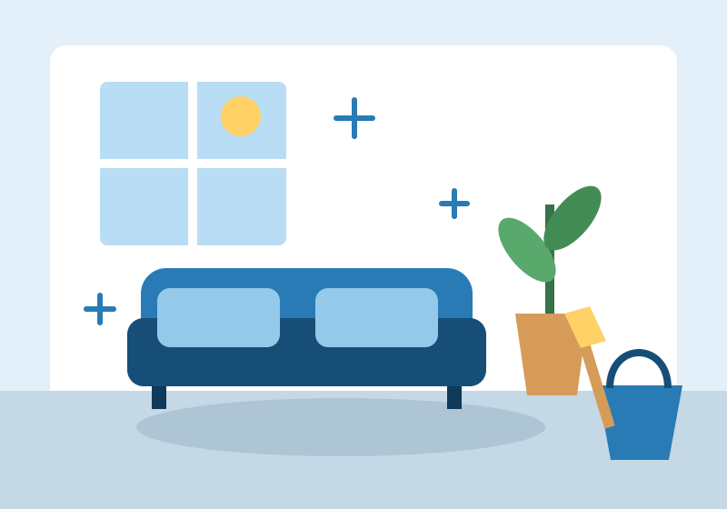

SERVICIO 2
Un hogar limpio para disfrutar cada día
La limpieza de hogares ayuda a mantener los ambientes ordenados y cómodos. En Servicios Express presentamos opciones de limpieza para dormitorios, salas, cocinas y baños.
El trabajo se organiza según el tamaño del espacio y las tareas acordadas antes de comenzar.
Consultar precio de ejemplo
¿Qué incluye el servicio?
Ambientes interiores
- Barrido, aspirado y trapeado de pisos.
- Limpieza del polvo en muebles y superficies accesibles.
- Organización básica de salas y dormitorios.
Cocina y baños
- Limpieza de mesones, lavaplatos y azulejos accesibles.
- Limpieza de lavamanos, sanitarios y espejos.
- Recolección de residuos domésticos.
No incluye trabajos en altura, reparaciones ni manejo de residuos peligrosos. Los detalles se acuerdan previamente.
Planes de limpieza
Planes y precios ficticios para esta práctica académica.
| Plan | Espacio de referencia | Duración estimada | Precio por visita |
|---|---|---|---|
| Básico | Hasta 2 ambientes | 2 horas | Bs 100 |
| Completo | Hasta 4 ambientes | 4 horas | Bs 180 |
| Profundo | Hasta 6 ambientes | 6 horas | Bs 260 |
Cómo se organiza una visita
- Definir las tareas: indicar los ambientes y las necesidades de limpieza.
- Acordar el plan: revisar el alcance, el tiempo y los materiales.
- Realizar la limpieza: seguir las tareas acordadas y cuidar las superficies.
- Revisar el resultado: comprobar los espacios al finalizar.
Calcula una cotización de ejemplo
Elige un plan y el número de visitas. Este simulador no realiza reservas ni envía datos.